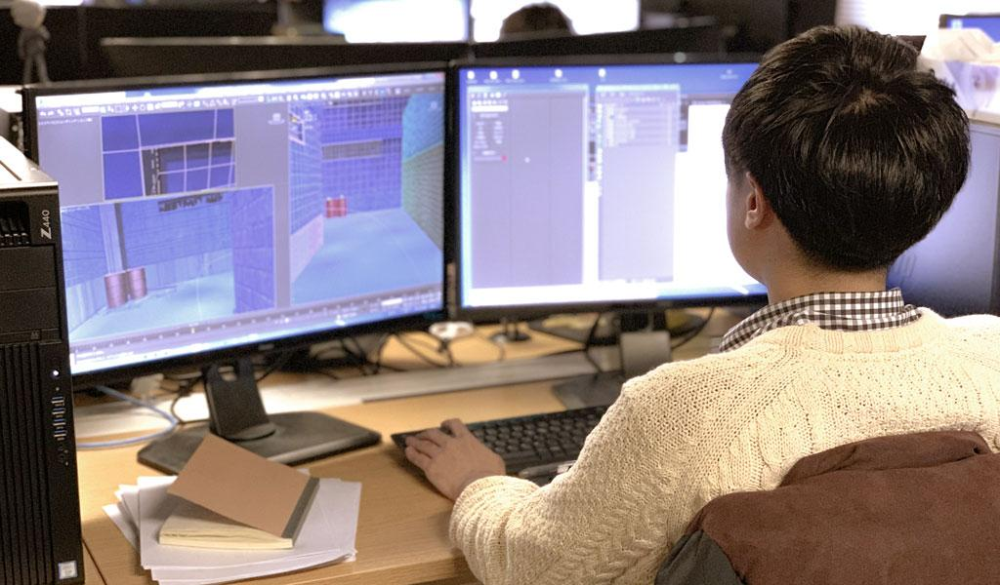
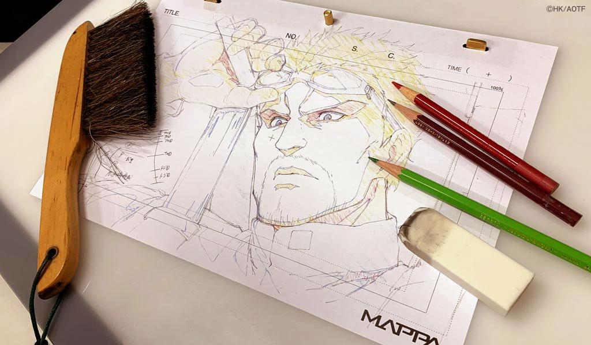
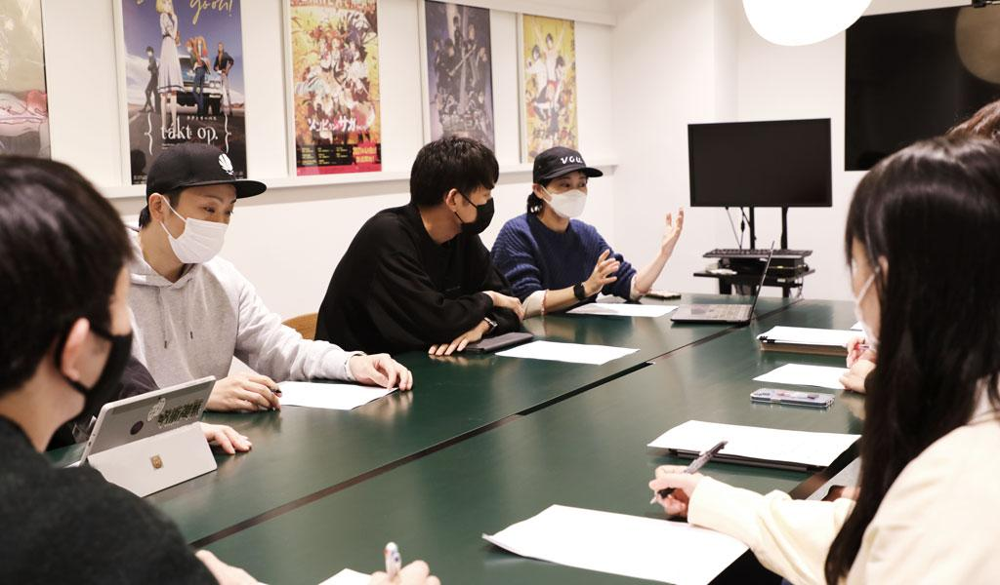

MAPPA
COMPANY
VISION
いつまでも心に残るアニメを届けたい
私たちが何よりも大切にしたいのは、作品を楽しみにしてくださっているファンの皆様のことです。
泣いたり笑ったり、心を震わせたり……。画面の向こう側にいる一人ひとりの顔を思い浮かべながら、何度も観返したくなるような、「出会えてよかった」と思ってもらえるようなアニメを創りたいと考えています。
型にとらわれず、様々なジャンルの作品や新たな表現技法にチャレンジしながら、 “心に残るアニメを届けられるスタジオ”を目指します。
STUDIO & DEPARTMENT
-
 Production Department
Production Department
-
 CGI Department
CGI Department
- Directors
- 2D Animators
-
 Rights Management
Rights Management
-
 Production Development
Production Development
-
制作部
アニメーション制作に必要な全ての素材・スケジュール・予算・クオリティ管理を担当しております。様々なジャンルの作品を制作する上で、先を見据えた行動をすることによってより良い作品を生み出すことを目標としております。各部署の橋渡しをしながら、広く知識と経験を積みアニメーションを完成へと運ぶことが制作部の仕事です。

-
CGI 部
3DCG・美術・仕上・撮影・編集・デザインの６部門で構成され、デジタルワークス全般を担当しております。作品ごとに監督と意見交換し、各部門のクリエイターと完成イメージを共有しながら内製できることが強みです。裁量度が高く得意な領域を伸ばしながら成長できる環境で、視聴者を作品世界へ引き込む映像作りを意識しております。
 -
演出部
作品の設計図となる絵コンテ制作をはじめ、クリエイティブな現場を指揮することを担当しております。部署内では監督による勉強会や演出家同士の意見交換を積極的に行い、よりよい演出が育つ環境作りを心がけております。また、各話の演出から始まり経験を積んだスタッフは監督へとステップアップし、作品全体の舵取りを行うようになります。

-
作画部
アナログ・デジタルの両面での作画を担当しております。様々なテイストのキャラクターデザインの作画を続けていくことに加え、社内での作画の教育を強化していくことで、更なる表現力の向上を目指しております。弊社は作画スタッフの社員登用にも積極的に取り組んでおります。
 -
ライツ事業部
IP管理運用、商品企画、イベント企画運営ほか自社作品の広報・宣伝を担当しております。社内外のクライアント、クリエイターと密に向き合いながら、プロダクションならではの商品企画、ならびに宣伝活動を行っております。作品展開にイベントと商品を連動させ、様々な角度からお客様へ作品を楽しんでいただくためのメソッドを追求しています。

-
企画開発部
国内外のパートナー企業とビジネススキームを構築し、企画の決定・クリエイターの選定・シナリオ制作などプリプロダクション全般を担当しております。また、制作部やCGI部などの他部署と連携を取りながら海外在住の制作会社や個人クリエイターにも制作に携わっていただき、各作品により多様且つ豊富な表現力を持たせることを目指しております。

仙台スタジオ
仙台スタジオでは主に作画（動画・仕上）の工程を担当しております。紙に鉛筆で描く従来の方式ではなくデジタル動画を推進することで、アニメーターによる仕上工程まで一貫作業、および早期の実践入りを実現しています。また、今後は弊社作品の動画・仕上部門を社内で完結させることを目標としており、ゆくゆくは3DCG・撮影・背景といったCGI 部門を新設予定です。
アニメ業界は海外市場の拡大に伴い、産業としての成長を続けています。より安定的な制作基盤を築くことで需要に応えられるよう、雇用を増やし内製率を高めることを今一番の目標としています。仙台スタジオでは採用活動に積極的に取り組んでおり、東北の各専門学校や大学などとの学事連携も行っております。新卒・経験者ともに積極的に採用し、教育レベルの向上や体制の強化をしながら、クリエイティブな仕事を目指す若者の受け皿として機能していきたいと考えております。
![｜At Sendai studio, we are mainly responsible for the processes of in-between animation and digital painting. By promoting digital in-between animation instead of the traditional method of pencil on paper, it enables us to achieve consistent work from the animation stage all the way to the digital paint process, as well as to facilitate early entry of animators into actual projects. In the future, we plan to establish a CGI section for 3DCG, compositing, and backgrounds, while aiming at finalizing internally the in-between animation section and the digital paint section. <br />
<br />
The anime industry continues to grow along with the expansion of international markets. By building a more stable production base, our primary goal now is to increase the percentage of in-house production through increasing employment in order to meet rising demands. Our Sendai studio is actively involved in recruitment activities, collaborating academically with various vocational schools and universities in the Tohoku region. We intend to actively hire both new graduates and experienced employees, and to function as a receptacle for young people who aim at pursuing careers in the creative field, while also improving the education level and strengthening our organizational structure.](images/sendai-1.jpg)
大阪スタジオ
大阪スタジオはCGI部のサテライトスタジオとして2023年より始動し、主に3DCG部門のクリエイターが所属しています。メインツールは3dsMaxとBlenderで、本社との協働も距離を感じず、新卒や中途入社スタッフも東京勤務者と変わらない成長を見せております。
大阪の中心地に位置しているため近隣府県からも通いやすく、関西圏に居住しながらアニメ業界の第一線で活躍できることが魅力です。現地採用にも積極的に取り組んでおり、関西の各専門学校や大学と、セミナー、インターンシップ、会社見学会などを定期的に行い、業界情報の発信や若き才能の発掘に力を入れています。
今後はCGI部背景部門や作画・演出部、制作部といった他部署の合流を考えており、東京と同等の制作機能を目指してまいります。
Located in the center of Osaka, it is easy for our artists to commute to the studio from neighboring prefectures, making it an attractive place to be at the forefront of the anime industry while residing in the Kansai area. We actively recruit local staff, and regularly hold seminars, internships, and company tours with various vocational schools and universities in Kansai in accordance with our commitment to disseminate industry information and discover young talent.
In the future, we are considering having other departments such as the CGI Department's background art section, the Animation Department, and the Production Department, join our team in Osaka, with the aim of creating a functional production equivalent to that of Tokyo.
">
STUDIO & DEPARTMENT
-
制作部 Production Department
アニメーション制作に必要な全ての素材・スケジュール・予算・クオリティ管理を担当しております。様々なジャンルの作品を制作する上で、先を見据えた行動をすることによってより良い作品を生み出すことを目標としております。各部署の橋渡しをしながら、広く知識と経験を積みアニメーションを完成へと運ぶことが制作部の仕事です。
-
CGI 部 CGI Department
3DCG・美術・仕上・撮影・編集・デザインの６部門で構成され、デジタルワークス全般を担当しております。作品ごとに監督と意見交換し、各部門のクリエイターと完成イメージを共有しながら内製できることが強みです。裁量度が高く得意な領域を伸ばしながら成長できる環境で、視聴者を作品世界へ引き込む映像作りを意識しております。
-
演出部 Directors
作品の設計図となる絵コンテ制作をはじめ、クリエイティブな現場を指揮することを担当しております。部署内では監督による勉強会や演出家同士の意見交換を積極的に行い、よりよい演出が育つ環境作りを心がけております。また、各話の演出から始まり経験を積んだスタッフは監督へとステップアップし、作品全体の舵取りを行うようになります。
-
作画部 2D Animators
アナログ・デジタルの両面での作画を担当しております。様々なテイストのキャラクターデザインの作画を続けていくことに加え、社内での作画の教育を強化していくことで、更なる表現力の向上を目指しております。弊社は作画スタッフの社員登用にも積極的に取り組んでおります。
-
ライツ事業部 Rights Management
IP管理運用、商品企画、イベント企画運営ほか自社作品の広報・宣伝を担当しております。社内外のクライアント、クリエイターと密に向き合いながら、プロダクションならではの商品企画、ならびに宣伝活動を行っております。作品展開にイベントと商品を連動させ、様々な角度からお客様へ作品を楽しんでいただくためのメソッドを追求しています。
-
企画開発部 Production Development
国内外のパートナー企業とビジネススキームを構築し、企画の決定・クリエイターの選定・シナリオ制作などプリプロダクション全般を担当しております。また、制作部やCGI部などの他部署と連携を取りながら海外在住の制作会社や個人クリエイターにも制作に携わっていただき、各作品により多様且つ豊富な表現力を持たせることを目指しております。
-
仙台スタジオ
仙台スタジオでは主に作画（動画・仕上）の工程を担当しております。紙に鉛筆で描く従来の方式ではなくデジタル動画を推進することで、アニメーターによる仕上工程まで一貫作業、および早期の実践入りを実現しています。また、今後は弊社作品の動画・仕上部門を社内で完結させることを目標としており、ゆくゆくは3DCG・撮影・背景といったCGI 部門を新設予定です。
アニメ業界は海外市場の拡大に伴い、産業としての成長を続けています。より安定的な制作基盤を築くことで需要に応えられるよう、雇用を増やし内製率を高めることを今一番の目標としています。仙台スタジオでは採用活動に積極的に取り組んでおり、東北の各専門学校や大学などとの学事連携も行っております。新卒・経験者ともに積極的に採用し、教育レベルの向上や体制の強化をしながら、クリエイティブな仕事を目指す若者の受け皿として機能していきたいと考えております。
-
Located in the center of Osaka, it is easy for our artists to commute to the studio from neighboring prefectures, making it an attractive place to be at the forefront of the anime industry while residing in the Kansai area. We actively recruit local staff, and regularly hold seminars, internships, and company tours with various vocational schools and universities in Kansai in accordance with our commitment to disseminate industry information and discover young talent.
In the future, we are considering having other departments such as the CGI Department's background art section, the Animation Department, and the Production Department, join our team in Osaka, with the aim of creating a functional production equivalent to that of Tokyo.
">大阪スタジオ
大阪スタジオはCGI部のサテライトスタジオとして2023年より始動し、主に3DCG部門のクリエイターが所属しています。メインツールは3dsMaxとBlenderで、本社との協働も距離を感じず、新卒や中途入社スタッフも東京勤務者と変わらない成長を見せております。
大阪の中心地に位置しているため近隣府県からも通いやすく、関西圏に居住しながらアニメ業界の第一線で活躍できることが魅力です。現地採用にも積極的に取り組んでおり、関西の各専門学校や大学と、セミナー、インターンシップ、会社見学会などを定期的に行い、業界情報の発信や若き才能の発掘に力を入れています。
今後はCGI部背景部門や作画・演出部、制作部といった他部署の合流を考えており、東京と同等の制作機能を目指してまいります。
COMPANY PROFILE
- 会社名
- 株式会社MAPPA
- 設立
- 2011年6月14日
- 役員・顧問
- 代表取締役社長 : 大塚 学
取締役会長 : 丸山 正雄
取締役副社長 : 長谷川 博哉
取締役 : 淡輪 雄介
取締役 : 籔田 修平
取締役 : 細貝 康介
社外取締役 : 福島 祐一
執行役員 : 瀬下 恵介
執行役員 : 奥納 基
顧問／Chief Rights Officer : 松尾 英児 - 事業内容
- テレビアニメを中心に、映画、CM、Webムービー等、ジャンルにとらわれない様々な映像作品の企画・制作を行っています。また、自社で権利を保有するIPの窓口権を運用し、国内外でのライツ事業も展開しています。
- 従業員数
- 467名（2025年4月時点）
CONTACT
お仕事のご依頼・ご相談等につきましては、
まずはメールにてお問い合わせください。
お問い合わせ内容によってはお返事を差し上げられない場合もございます。
あらかじめご了承ください。
お問い合わせ先
info@mappa.co.jp
※弊社では、書面による正式な契約にもとづく場合を除き、作品内容・企画・キャラクター等に関するご提案(アイデア等)の募集・受領は一切行っておりません。
万が一、ご提案をお送りいただいた場合には、以下の条件にご同意いただいたものとみなします。
・ご提案に関し、弊社は秘密保持の義務を負いません。
・ご提案に関し、弊社は検討・評価・採用する義務を負いません。
・ご提案に関し、弊社は一切の回答義務を負いません。
・ご提案内容が弊社の現在または将来の企画や作品と同一または類似している場合でも、弊社は一切の責任を負いません。
・ご提案に関する資料等は返却いたしません。郵送・宅配便等により送付された場合でも、開封せずに廃棄させていただきます。
※会社見学や、個人の方からの取材のご依頼はお断りしております。ご理解のほどよろしくお願いいたします。